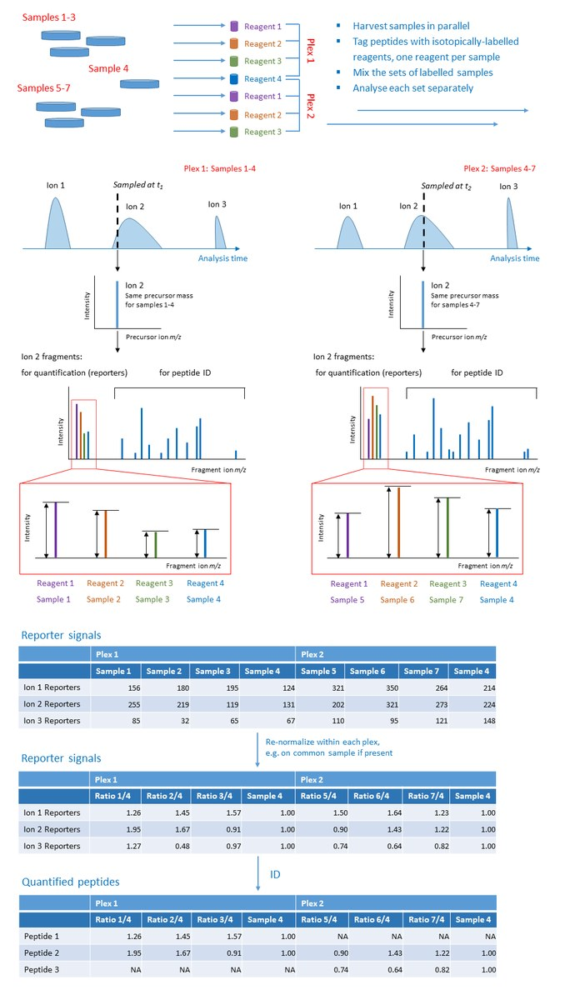
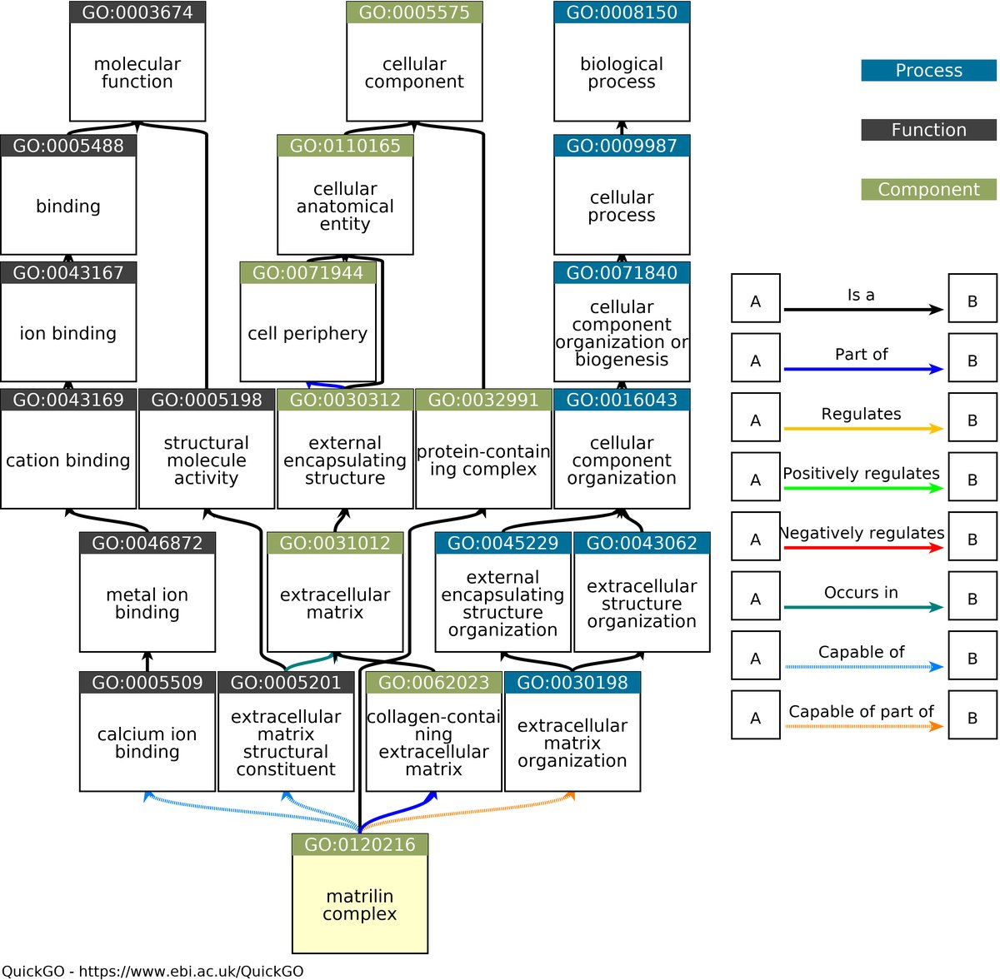

Marco teórico
Del gen a la proteína, y la proteómica
Una proteína es una cadena de aminoácidos que, ya plegada, hace un trabajo: corta moléculas, transporta otras, sostiene una estructura o manda una señal. La receta está en un gen, un tramo de ADN. La célula copia ese tramo a una molécula más corta, el ARN mensajero. Después lee el ARN de tres en tres letras y va añadiendo aminoácidos. Esa relación —del gen al ARN y del ARN a la proteína— es el llamado dogma central (Crick, 1970). El catálogo de proteínas humanas, con su secuencia y sus nombres, está en UniProt (The UniProt Consortium, 2025).
Medir el gen, o el ARN, no dice cuánta proteína hay. La proteómica mide muchas proteínas a la vez. En este trabajo eso se hace con espectrometría de masas sobre tablas que otros laboratorios ya publicaron (Cox y Mann, 2008). No se reclutó a nadie y no se volvió a identificar espectro por espectro.


Para leer más
- Crick (1970), la relación entre ADN, ARN y proteína.
- The UniProt Consortium (2025), la base de secuencias y nombres.
- Cox y Mann (2008), un programa de referencia para identificar y cuantificar proteínas.
Espectrometría de masas
La proteómica de abajo hacia arriba corta primero las proteínas en péptidos. Esos péptidos se separan en el tiempo con una cromatografía líquida, para que no entren todos juntos al instrumento. Un péptido mostrado por HLA, o un neoantígeno, es otra medición: esta tesis no la hizo. Esa diferencia está en Hacia dónde puede ir. El espectrómetro de masas mide la masa de cada péptido y cómo se rompe. El patrón de fragmentos permite proponer su secuencia, y de ahí la proteína de origen. La cantidad se estima a partir de la intensidad de la señal, no como una concentración de laboratorio lista para un informe clínico (Cox y Mann, 2008; Demichev y colaboradores, 2020).
Un mismo péptido puede coincidir con varias proteínas, a veces de otra especie. Por eso, al leer las tablas, se filtra por especie humana y se cruza con una biblioteca de contaminantes (Frankenfield y colaboradores, 2022). Este flujo no abre los espectros para identificarlos de nuevo. La única lectura de archivos crudos es la fecha en que se adquirió cada suero, con ThermoRawFileParser (Hulstaert y colaboradores, 2020).

Para leer más
- Cox y Mann (2008), identificación y cuantificación a gran escala.
- Demichev y colaboradores (2020), DIA-NN y el valor q.
- Frankenfield y colaboradores (2022), contaminantes que comparten péptidos con proteínas humanas.
- Hulstaert y colaboradores (2020), lectura de la fecha en los crudos de Thermo.
TMT, LFQ y DIA
Las tres técnicas responden a la misma pregunta —cuánta señal hay de cada proteína— con diseños distintos. En el marcado isobárico TMT, varias muestras se etiquetan, se mezclan y se miden juntas. Cada etiqueta suelta un ion reportador y la comparación es una razón frente a una referencia común. El archivo de tejido de CPTAC ya viene como razón en logaritmo base 2, así que un segundo logaritmo no tiene sentido (Vasaikar y colaboradores, 2019). Una generación anterior del mismo programa midió colon y recto con otra profundidad (Zhang y colaboradores, 2014).
En la cuantificación sin marcaje, o LFQ, cada muestra se mide por separado. MaxLFQ normaliza de forma retardada y usa las razones de los péptidos que aparecen en pares de muestras (Cox y colaboradores, 2014). En esas tablas, un cero significa que la proteína no se identificó, no que su cantidad sea cero. Tratar el cero como cantidad sesga el cambio. Los huecos tienen orígenes mezclados y rellenarlos puede inventar diferencias (Lazar y colaboradores, 2016). El tejido de Tanaka y colaboradores (2024) es LFQ. El suero por estadio se agregó con directLFQ (Ammar y colaboradores, 2023).
En la adquisición independiente de datos, o DIA, el instrumento fragmenta ventanas de masa sin escoger antes los péptidos más intensos. DIA-NN entrega cantidades y valores q, que controlan identificaciones falsas (Demichev y colaboradores, 2020). Así están medidos los sueros de Rai y colaboradores (2025).
TMT, LFQ y DIA no se fusionan. Las escalas, las personas, los instrumentos y los lotes son distintos. Un ajuste de lote como ComBat supone que la diferencia técnica se puede separar de la biológica (Johnson y colaboradores, 2007). Cuando el estudio, la plataforma, la matriz y el grupo clínico viajan juntos, esa separación no existe (Leek y colaboradores, 2010). Cada cohorte se contrasta sola. Entre cohortes solo se comparan resultados ya calculados, como el sentido del cambio.

Para leer más
- Vasaikar y colaboradores (2019) y Zhang y colaboradores (2014), las dos generaciones de tejido CPTAC.
- Cox y colaboradores (2014), MaxLFQ, y Ammar y colaboradores (2023), directLFQ.
- Lazar y colaboradores (2016), los huecos de la cuantificación sin marcaje.
- Tanaka y colaboradores (2024) y Rai y colaboradores (2025), las cohortes LFQ y DIA de este caso.
- Johnson y colaboradores (2007) y Leek y colaboradores (2010), por qué no se corrige el lote entre estudios.
Cáncer colorrectal
El cáncer colorrectal aparece, en la mayoría de los casos, a partir de lesiones de la mucosa que tardan años en avanzar. Esa ventana es la que justifica buscarlo antes de que dé síntomas (Dekker y colaboradores, 2019). Las estimaciones mundiales de casos y muertes están reunidas en GLOBOCAN (Bray y colaboradores, 2024). La biología molecular del tumor —vías, subtipos y dianas— se revisa, entre otras fuentes, en García-Foncillas y colaboradores (2026), junto con las revisiones clínicas de Dekker y colaboradores y de Locker y colaboradores (2006).
El estadio describe hasta dónde llegó el tumor: si sigue limitado a la pared del intestino, si alcanzó ganglios cercanos o si hay metástasis en otros órganos. El estudio de suero por estadio agrupa las muestras en I–II, III y IV (Hermoso-Durán y colaboradores, 2026; depósito de McKay, 2026). En este repositorio esa lectura quedó sin proteínas tumorales epiteliales suficientes. No aporta un marcador de carga tumoral en sangre.
La colonoscopia recorre el colon y el recto, ve la mucosa y puede quitar pólipos. Sigue siendo la prueba de referencia (Dekker y colaboradores, 2019). La tamización —también se dice tamizaje— es buscar la enfermedad en quien todavía no tiene un diagnóstico. No es el seguimiento de quien ya fue tratado. El antígeno carcinoembrionario, o CEA, se recomienda para el seguimiento y no como prueba de tamización (Locker y colaboradores, 2006). En Colombia, la Ley 1384 de 2010 pide acciones de atención integral, incluida la detección temprana (Congreso de la República de Colombia, 2010). Este trabajo no diseña esa prueba.
Una colonoscopia negativa, en el estudio de Rai y colaboradores, reúne a personas con síntomas intestinales en las que no se vio cáncer. No son personas sanas y no son un solo diagnóstico. Comparar el cáncer con ese grupo pregunta otra cosa que compararlo con personas sanas.

Para leer más
- Dekker y colaboradores (2019), el cuadro clínico, la colonoscopia y la ventana de tamización.
- Bray y colaboradores (2024), las cifras mundiales de GLOBOCAN.
- García-Foncillas y colaboradores (2026), revisión de la biología molecular.
- Locker y colaboradores (2006), el CEA en el seguimiento y no en la tamización.
- Hermoso-Durán y colaboradores (2026) y McKay (2026), el suero por estadio.
- Congreso de la República de Colombia (2010), la Ley 1384 de 2010.
Sangre, suero y biomarcadores
Un biomarcador es una medición que se propone para detectar, seguir o clasificar una enfermedad. Llegar de una proteína candidata a un uso clínico es un camino largo (Rifai y colaboradores, 2006). Pepe y colaboradores (2001) describieron fases. La primera es exploratoria: compara casos y controles en muestras ya reunidas. Todo lo que este trabajo dice de una proteína o de un modelo pertenece a esa fase.
El suero no es el tumor diluido. Unas pocas proteínas —albúmina, inmunoglobulinas, apolipoproteínas, complemento y coagulación— cubren varias magnitudes de concentración (Anderson y Anderson, 2002). La mayor parte de lo que se mide en plasma viene de tejidos sanos y del sistema inmunitario (Malmström y colaboradores, 2025). Si una proteína del tumor llega a la sangre, llega en poca cantidad, debajo de ese rango dinámico.
Las proteínas que en esta corrida llegan a medirse en el suero, y aun así no pasan el criterio, están en Proteínas candidatas. Comparar cáncer con personas sanas enciende proteínas de la respuesta inflamatoria, que no son exclusivas del tumor (Gabay y Kushner, 1999). La preparación de la muestra añade otra capa. Hemólisis, plaquetas y coagulación cambian el proteoma y pueden parecer un marcador (Geyer y colaboradores, 2019). Si todas las muestras de un grupo se miden juntas, la deriva del instrumento coincide con el grupo y no se puede separar de la enfermedad (Leek y colaboradores, 2010). En el suero principal de este repositorio, los tres grupos se adquirieron en tres bloques seguidos. Esa confusión está contada en Resultados.
Un metaanálisis distinto, que integra otros conjuntos públicos de proteómica de cáncer colorrectal, es el de Robles y colaboradores (2024). No es este flujo: aquí las intensidades no se suman entre plataformas.

Para leer más
- Anderson y Anderson (2002), el rango dinámico del plasma.
- Malmström y colaboradores (2025), de qué tejidos viene lo que se mide en plasma.
- Gabay y Kushner (1999), proteínas de fase aguda.
- Geyer y colaboradores (2019), sesgos de la muestra en estudios de biomarcadores.
- Pepe y colaboradores (2001) y Rifai y colaboradores (2006), las fases y el camino hasta la clínica.
- Robles y colaboradores (2024), otra forma de integrar datos públicos.
Gene Ontology y bases públicas
Gene Ontology es un vocabulario controlado. Reparte los genes en procesos biológicos, componentes celulares y funciones moleculares (Ashburner y colaboradores, 2000; The Gene Ontology Consortium, 2023). Sirve para leer una lista de proteínas sin memorizar cada símbolo. El enriquecimiento de esta corrida es del tejido entero. Qué términos comparten las veinte proteínas del suero, y qué no se calculó proteína por proteína, está en Proteínas candidatas. El análisis de sobrerrepresentación pregunta si una lista corta trae más genes de un término de los que el azar pondría. El enriquecimiento de conjuntos, o GSEA, no corta la lista: ordena todos los genes y pregunta si los de un término se acumulan en un extremo (Subramanian y colaboradores, 2005). Aquí esa cuenta se hace con GSEApy (Fang y colaboradores, 2023). Un suero que mide pocos genes de cada proceso no alcanza para decir que un proceso del tumor está en la sangre.
Los nombres y las secuencias salen de UniProt. El mapa de en qué tejido se expresa cada proteína, y una parte del atlas de sangre, salen del Human Protein Atlas (Uhlén y colaboradores, 2015; Human Protein Atlas, s. f.). Una concentración de referencia en ese atlas no es la concentración de estos pacientes.
Las matrices vienen de depósitos públicos. El tejido TMT es el estudio PDC000116 del Proteomic Data Commons (Proteomic Data Commons, s. f.; Vasaikar y colaboradores, 2019). Los otros tres accesos están en PRIDE, que forma parte de ProteomeXchange (Perez-Riverol y colaboradores, 2025; Deutsch y colaboradores, 2023). La copia de entradas que usa la corrida sellada, con sus huellas, está en Zenodo (Polanco Franco, 2026). El tamaño de cada cohorte está en Los datos.

Para leer más
- Ashburner y colaboradores (2000) y The Gene Ontology Consortium (2023).
- Subramanian y colaboradores (2005) y Fang y colaboradores (2023), el enriquecimiento y su implementación.
- Uhlén y colaboradores (2015) y el Human Protein Atlas (s. f.).
- Deutsch y colaboradores (2023) y Perez-Riverol y colaboradores (2025), ProteomeXchange y PRIDE.
- Proteomic Data Commons (s. f.), el estudio PDC000116.